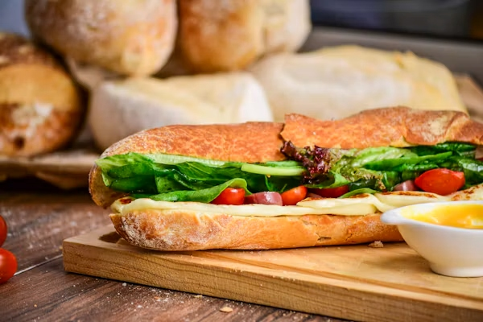

Italian Pizza

Description
1. Description
Italian pizza is a traditional Italian dish made from a thin,
soft or crispy dough topped with tomato sauce, mozzarella cheese,
olive oil, and fresh herbs. It is baked in a hot oven until
the crust is golden and the cheese melts.
It is commonly served for lunch or dinner.
Ingredients
- 500 g wheat flour
- 300 ml warm water
- g dry yeast
- teaspoon salt
Preparation Steps
- Make the dough: Add flour, salt, and olive oil. Mix and knead for about 8–10 minutes until the dough
- Let the dough rise: Cover the dough and leave it in a warm place for 1–2 hours, or until it doubles in size.
- Preheat the oven: Heat the oven to its highest setting, ideally 240–250°C.
- Shape the dough: Divide the dough into portions and roll each portion into a thin, round pizza base.
- Add the toppings: Spread tomato sauce over the base. Add mozzarella cheese, sliced tomatoes